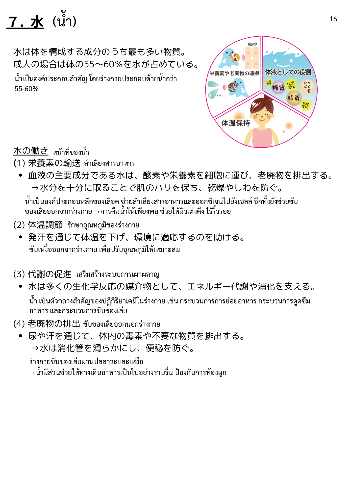
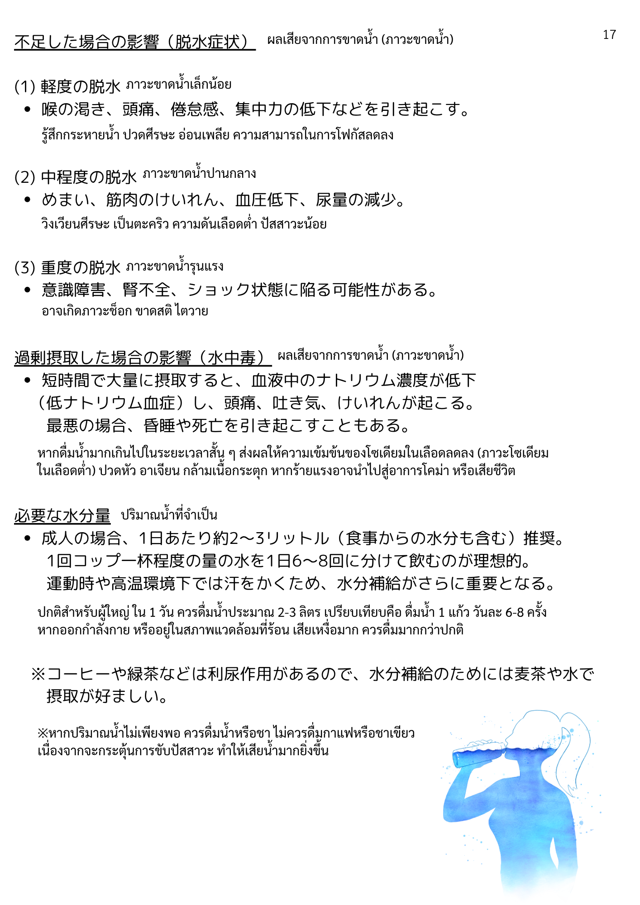

← 研修タイムテーブルに戻る
栄養学 ／ 5. 10大栄養素
水座学


ことばリスト
基本 ／ พื้นฐาน
| 漢字 | ひらがな | ความหมาย (ไทย) |
|---|
| 水 | みず | น้ำ |
| 体 | からだ | ร่างกาย |
| 構成 | こうせい | องค์ประกอบ / โครงสร้าง |
| 成分 | せいぶん | ส่วนประกอบ / สาร |
| 最も | もっとも | มากที่สุด |
| 多い | おおい | มาก / เยอะ |
| 物質 | ぶっしつ | สาร / วัตถุ |
| 成人 | せいじん | ผู้ใหญ่ |
| 場合 | ばあい | กรณี |
| 占める | しめる | ครอบครอง / กินสัดส่วน |
| 栄養素 | えいようそ | สารอาหาร |
| 役割 | やくわり | บทบาท / หน้าที่ |
水の働き ／ การทำงานของน้ำ
| 漢字 | ひらがな | ความหมาย (ไทย) |
|---|
| 働き | はたらき | การทำงาน / บทบาท |
| 栄養素の輸送 | えいようそのゆそう | การลำเลียงสารอาหาร |
| 輸送 | ゆそう | การขนส่ง / ลำเลียง |
| 血液 | けつえき | เลือด |
| 主成分 | しゅせいぶん | ส่วนประกอบหลัก |
| 酸素 | さんそ | ออกซิเจน |
| 細胞 | さいぼう | เซลล์ |
| 運ぶ | はこぶ | ขนส่ง / ลำเลียง |
| 老廃物 | ろうはいぶつ | ของเสีย |
| 排出 | はいしゅつ | การขับออก |
| 十分 | じゅうぶん | เพียงพอ |
| 取る | とる | รับ / รับเข้า |
| 肌 | はだ | ผิว |
| ハリ | はり | ความตึง / ความเต่งตึง |
| 保つ | たもつ | รักษา / คงไว้ |
| 乾燥 | かんそう | ความแห้ง / แห้งกร้าน |
| 防ぐ | ふせぐ | ป้องกัน |
体温調節 ／ การควบคุมอุณหภูมิร่างกาย
| 漢字 | ひらがな | ความหมาย (ไทย) |
|---|
| 体温調節 | たいおんちょうせつ | การควบคุมอุณหภูมิร่างกาย |
| 発汗 | はっかん | การขับเหงื่อ |
| 通じる | つうじる | ผ่าน / ทาง |
| 体温 | たいおん | อุณหภูมิร่างกาย |
| 下げる | さげる | ลดลง / ทำให้ต่ำลง |
| 環境 | かんきょう | สภาพแวดล้อม |
| 適応 | てきおう | การปรับตัว |
| 助ける | たすける | ช่วย / สนับสนุน |
代謝・排出 ／ การเผาผลาญ・ขับถ่าย
| 漢字 | ひらがな | ความหมาย (ไทย) |
|---|
| 代謝 | たいしゃ | การเผาผลาญ / เมตาบอลิซึม |
| 代謝の促進 | たいしゃのそくしん | การส่งเสริมการเผาผลาญ |
| 生化学反応 | せいかがくはんのう | ปฏิกิริยาชีวเคมี |
| 媒介 | ばいかい | ตัวกลาง / สื่อกลาง |
| エネルギー代謝 | えねるぎーたいしゃ | การเผาผลาญพลังงาน |
| 消化 | しょうか | การย่อยอาหาร |
| 支える | ささえる | สนับสนุน / ค้ำจุน |
| 老廃物の排出 | ろうはいぶつのはいしゅつ | การขับของเสียออก |
| 尿 | にょう | ปัสสาวะ |
| 汗 | あせ | เหงื่อ |
| 毒素 | どくそ | สารพิษ |
| 不要 | ふよう | ไม่จำเป็น / ส่วนเกิน |
| 消化管 | しょうかかん | ทางเดินอาหาร |
| 滑らか | なめらか | ราบรื่น |
| 便秘 | べんぴ | ท้องผูก |
脱水症状 ／ อาการขาดน้ำ
| 漢字 | ひらがな | ความหมาย (ไทย) |
|---|
| 不足 | ふそく | ขาด / ไม่เพียงพอ |
| 影響 | えいきょう | ผลกระทบ / อิทธิพล |
| 脱水症状 | だっすいしょうじょう | อาการขาดน้ำ |
| 軽度 | けいど | ระดับเบา / น้อย |
| 中程度 | ちゅうていど | ระดับปานกลาง |
| 重度 | じゅうど | ระดับรุนแรง |
| 脱水 | だっすい | ภาวะขาดน้ำ |
| 喉の渇き | のどのかわき | ความกระหายน้ำ |
| 頭痛 | ずつう | ปวดหัว |
| 倦怠感 | けんたいかん | อาการอ่อนเพลีย |
| 集中力 | しゅうちゅうりょく | สมาธิ |
| 低下 | ていか | การลดลง |
| 引き起こす | ひきおこす | ก่อให้เกิด |
| めまい | めまい | เวียนหัว / มึนหัว |
| 筋肉 | きんにく | กล้ามเนื้อ |
| けいれん | けいれん | ตะคริว / ชัก |
| 血圧低下 | けつあつていか | ความดันโลหิตลดลง |
| 尿量 | にょうりょう | ปริมาณปัสสาวะ |
| 減少 | げんしょう | การลดลง |
| 意識障害 | いしきしょうがい | ความผิดปกติของสติ |
| 腎不全 | じんふぜん | ภาวะไตวาย |
| ショック状態 | しょっくじょうたい | ภาวะช็อก |
| 陥る | おちいる | ตกอยู่ใน (ภาวะ) |
| 可能性 | かのうせい | ความเป็นไปได้ |
水中毒 ／ ภาวะเป็นพิษจากน้ำ
| 漢字 | ひらがな | ความหมาย (ไทย) |
|---|
| 過剰摂取 | かじょうせっしゅ | การบริโภคมากเกินไป |
| 水中毒 | すいちゅうどく | ภาวะเป็นพิษจากน้ำ |
| 短時間 | たんじかん | ระยะเวลาสั้น |
| 大量 | たいりょう | ปริมาณมาก |
| 摂取 | せっしゅ | การบริโภค |
| 血液中 | けつえきちゅう | ในเลือด |
| ナトリウム | なとりうむ | โซเดียม |
| 濃度 | のうど | ความเข้มข้น |
| 低ナトリウム血症 | ていなとりうむけっしょう | ภาวะโซเดียมในเลือดต่ำ |
| 吐き気 | はきけ | คลื่นไส้ |
| 最悪 | さいあく | เลวร้ายที่สุด |
| 場合 | ばあい | กรณี |
| 昏睡 | こんすい | ภาวะโคม่า |
| 死 | し | ความตาย |
必要な水分量 ／ ปริมาณน้ำที่ต้องการ
| 漢字 | ひらがな | ความหมาย (ไทย) |
|---|
| 必要 | ひつよう | จำเป็น |
| 水分量 | すいぶんりょう | ปริมาณน้ำ |
| 推奨 | すいしょう | การแนะนำ |
| 食事 | しょくじ | มื้ออาหาร / การกิน |
| 水分 | すいぶん | น้ำ / ความชื้น |
| 含む | ふくむ | รวม / มี |
| 一杯 | いっぱい | หนึ่งแก้ว |
| 分ける | わける | แบ่ง |
| 理想的 | りそうてき | ที่เหมาะที่สุด |
| 運動時 | うんどうじ | ขณะออกกำลังกาย |
| 高温環境 | こうおんかんきょう | สภาพแวดล้อมร้อน |
| 汗をかく | あせをかく | เหงื่อออก |
| 水分補給 | すいぶんほきゅう | การเติมน้ำให้ร่างกาย |
| 重要 | じゅうよう | สำคัญ |
その他重要語 ／ คำสำคัญอื่น ๆ
| 漢字 | ひらがな | ความหมาย (ไทย) |
|---|
| 普段 | ふだん | โดยปกติ / ตามปกติ |
| 飲む | のむ | ดื่ม |
| 少ない | すくない | น้อย |
| トイレ | といれ | ห้องน้ำ |
| 回数 | かいすう | จำนวนครั้ง |
| 尿 | にょう | ปัสสาวะ |
| 濃い | こい | เข้ม / เข้มข้น |
| 色 | いろ | สี |
| コーヒー | こーひー | กาแฟ |
| 緑茶 | りょくちゃ | ชาเขียว |
| 利尿作用 | りにょうさよう | ฤทธิ์ขับปัสสาวะ |
| 麦茶 | むぎちゃ | ชาข้าวบาร์เลย์ (มูกิฉะ) |
| 好ましい | このましい | เหมาะสม / น่าพึงพอใจ |
| 冷たい | つめたい | เย็น |
| 胃腸 | いちょう | กระเพาะและลำไส้ |
| 負担 | ふたん | ภาระ (ต่อร่างกาย) |